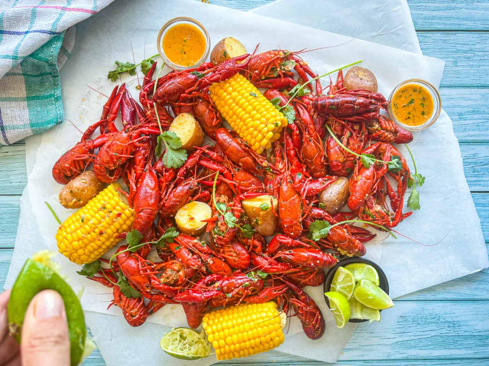

Comment y faire face à notre échelle
Dotée d’une grande adaptabilité, omnivore et opportuniste, l’Ecrevisse de Louisiane entre en interaction avec les amphibiens sous différentes formes : prédation, agressivité, compétition, etc. Au-delà des dommages portés aux espèces natives, l’espèce endommage les berges et impacte le fonctionnement des écosystèmes qu’elle colonise, en conduisant à un équilibre précaire caractérisé par le repli des communautés végétales et des macro-invertébrés. Il est donc nécessaire d’assurer la coexistence des espèces natives avec l'Écrevisse de Louisiane jusqu’à son extinction. La lutte contre cette espèce exotique envahissante s’articule ainsi autour de plusieurs moyens :
- - Maintenir des refuges pour les espèces natives
- - Éradiquer les individus présents
- - Eviter les nouvelles introductions
- - Sensibiliser les habitants et usagers
Maintenant que vous connaissez notre projet, il est temps de passer à l’action ! Nous vous proposons une démonstration claire et pédagogique du châtrage de l’écrevisse, une étape essentielle pour préserver la qualité de sa chair et éviter son goût amer. Dans la vidéo ci-dessous, vous découvrirez comment effectuer cette opération délicate en toute sécurité. Préparez vos pinces… c’est parti !
Une fois l’écrevisse châtrée, place à la gourmandise ! Rien de tel qu’une bonne recette pour sublimer ce crustacé aux saveurs raffinées. Nous vous proposons une préparation simple et savoureuse, idéale pour éveiller les papilles et valoriser ce produit méconnu. Enfilez votre tablier, on vous guide pas à pas pour cuisiner l’écrevisse comme un chef !
Cuisiner des écrevisses Louisiane
- Le Crawfish Boil -

Ingrédients
Pour 6 à 8 personnes :
-5 kg d’écrevisses vivantes
-6 litres d’eau
-1 tasse de sel de mer
-1 tasse de poivre noir moulu
-1 tasse de paprika
-1 tasse d’épices à ébullition pour fruits de mer (de type Old Bay)
-6 citrons coupés en deux
-4 oignons coupés en quartiers
-2 têtes d’ail coupées en deux horizontalement
-6 épis de maïs coupés en deux
-1 kg de pommes de terre petites
-500 g de saucisse fumée coupée en morceaux
-4 feuilles de laurier
-2 piments jalapeños (facultatif, pour plus de piquant)
-1 tasse de persil frais haché
-2 bâtons de céleri coupés en morceaux.
Préparation des écrevisses
Rincez bien les écrevisses à l’eau froide, en changeant l’eau plusieurs fois jusqu’à ce qu’elle soit claire. Égouttez et mettez de côté.
Préparation du bouillon
Dans une grande marmite (capacité de 10 à 15 litres), portez l’eau à ébullition. Ajoutez le sel, le poivre, le paprika, les épices à ébullition pour fruits de mer, les feuilles de laurier, les jalapeños (si vous en utilisez), les citrons, les oignons, l’ail, et le céleri. Laissez bouillir pendant environ 10 minutes pour que les saveurs se mélangent bien.
Cuisson des légumes et de la saucisse
Ajoutez les pommes de terre et laissez cuire pendant 10 minutes. Ajoutez les épis de maïs et la saucisse fumée, et laissez cuire encore 5 minutes.
Cuisson des écrevisses
Ajoutez les écrevisses et couvrez la marmite. Laissez cuire pendant environ 5 à 7 minutes, ou jusqu’à ce que les écrevisses deviennent rouges et que la viande soit opaque.
Repos des écrevisses
Éteignez le feu et laissez les écrevisses reposer dans le bouillon pendant 15 à 20 minutes. Cela permet aux écrevisses d’absorber toutes les saveurs épicées.
Service à la mode de la Louisiane
Égouttez les écrevisses, les légumes et la saucisse en utilisant une passoire. Disposez le tout sur une grande table recouverte de papier journal ou de papier kraft pour un service convivial. Saupoudrez de persil frais haché avant de servir.